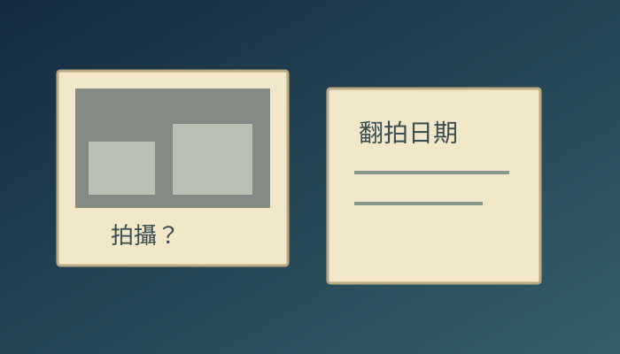
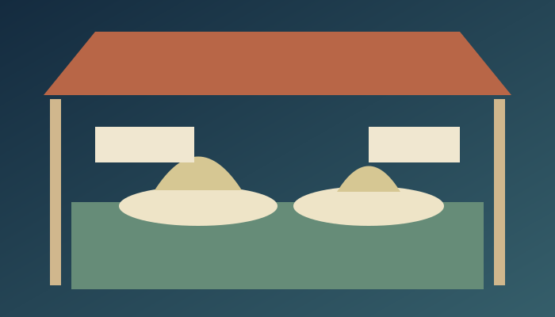
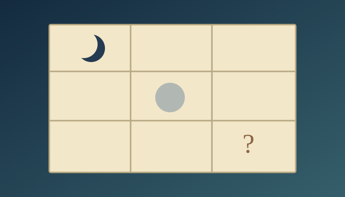
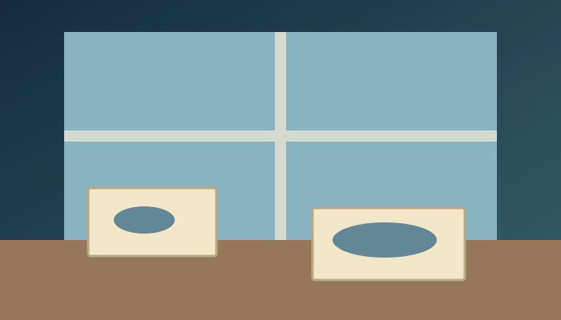

2026-10-10。本次 AI 協助新編；不是第三方故事摘錄，未宣稱教師或教育部審定。朗讀使用裝置語音，沒有預錄音檔。正文、問題、來源均由網站資料直接產生，避免審閱文件與網站不一致。
story-archive-photo｜四～六年級｜歷史與人物

校慶展覽要找最老的一張校門照片。以晨在櫃子裡找到一張黑白相片，背面用鉛筆寫著一個年份。他立刻在展覽卡上寫：「這就是學校第一天的樣子。」同組的若晴覺得這句話很有氣勢。
下午，退休校友來幫忙辨認人物，說照片應該是另一年拍的。他記得那棵樹，也記得拍照那天很熱。以晨把卡片翻過來，兩個年份像兩隊人，誰也不肯讓路。
若晴提議挑比較早的年份，這樣照片會顯得更珍貴。以晨差點同意，卻看見校友指著一個模糊的人影，停了很久才說：「也可能不是我。」原來記得一件事，不代表每個細節都同樣清楚。
圖書館老師找出一本活動冊。裡面有同一張照片，但下面寫的是冊子出版的日期。以晨又回到照片背面，發現鉛筆年份旁還有兩個淡淡的小字：「翻拍」。他們終於知道，有些日期在說照片怎麼被保存，不一定在說畫面何時發生。
可是活動冊仍沒寫原拍攝日。他們比較校門形狀、樹和教室的位置，縮小了可能的年代，卻沒有找到足夠證據選定某一天。若晴拿起橡皮擦，把「第一天」慢慢擦掉。
展覽卡最後寫著：「校門舊照，確切拍攝年待查。背面記有翻拍年份。」旁邊放了三種線索，讓參觀的人看看他們如何判斷。有位家長因此回家翻相簿，隔週帶來另一張角度不同的照片。
新照片沒有立刻解開所有問題。以晨卻不再失望。他在展覽本子留了一頁，題目叫「我們還想知道」。那張黑白照片沒有變老，也沒有變年輕，只是終於不必替自己不知道的事情作證。
史料：研究過去時用來了解事情的記錄或物件。
一張照片不能告訴我們的事情，應該怎麼標示？
回到人物的選擇，想想還有哪些合理做法；不需要分享自己的私人經驗。
學校、照片及人物為虛構，並非真實校史。
{"creator":"AI 協助逐篇新編，管理者授權本次內容檢查後發布；不是人工逐篇簽核","createdAt":"2026-10-10","thirdPartyText":"無引用他人故事或真實人物語錄","license":"未另選正式自有內容授權；AI 輔助內容權利仍有法律不確定性","audio":"瀏覽器 Web Speech API 即時合成；無預錄或真人音檔"}
story-coral-colour｜四～六年級｜自然與生態
海洋展的畫板放在教室後方，阿藍負責畫珊瑚。他用了最亮的紫色、橘色和粉紅色，連背景都點滿小魚。隔壁組拿來一張白色珊瑚的觀察照片，請他留一角。他搖頭：「這樣看起來像還沒畫完。」
對方說照片裡的是白化珊瑚，不能只靠顏色判斷已經死亡。阿藍第一次聽見這個區別。他原本準備的標題是「白色就是死掉」，現在筆尖停在紙上，不知道該怎麼改。
老師陪他們查資料：珊瑚受環境壓力影響，可能失去體內的共生藻而變白。持續受壓力可能死亡，也可能在條件改善後恢復。阿藍問是不是把海水弄涼就全好了。老師提醒，海裡有許多條件，不能用一個簡單動作保證結果。
阿藍試著重畫。他在白色區旁畫一條通往彩色區的箭頭，卻覺得好像又在保證一定會恢復。最後他把箭頭分成兩條，清楚寫「可能的不同後續」，把仍然不知道的時間留空。
展覽前，同學說海報沒有原來那麼漂亮。阿藍也有點失落。他把一小塊最鮮豔的圖保留下來，旁邊放觀察照片的來源和查核日期，讓人先被顏色吸引，再慢慢看懂差別。
有個低年級孩子指著白色問：「忘了塗嗎？」阿藍沒有急著糾正，而是帶他看圖說。孩子看完，替白色區畫了一個很小的問號，阿藍把它留著。原本令他難為情的空白，反而成了最多人停下來的地方。
展覽結束，他沒有把海畫成全白，也沒有重新全部塗滿。他把畫板靠在牆邊，像保存一段尚未結束的觀察。海仍然漂亮，只是漂亮不再是它唯一值得被看見的理由。
共生：不同生物共同生活並形成緊密關係；珊瑚與共生藻是例子。
海報要吸引人，又不能讓人誤解，你會怎麼安排圖與說明？
回到人物的選擇，想想還有哪些合理做法；不需要分享自己的私人經驗。
人物、地點與事件為本次新編虛構情節。
{"creator":"AI 協助逐篇新編，管理者授權本次內容檢查後發布；不是人工逐篇簽核","createdAt":"2026-10-10","thirdPartyText":"無引用他人故事或真實人物語錄","license":"未另選正式自有內容授權；AI 輔助內容權利仍有法律不確定性","audio":"瀏覽器 Web Speech API 即時合成；無預錄或真人音檔"}
NOAA：What is coral bleaching?｜2026-10-10
story-island-table｜四～六年級｜想像與不同觀點
班上收到一座紙上的島。老師說，這是完全虛構的規劃活動，不代表任何真實島嶼。島中央有一塊空地，四組孩子要決定它的用途。立立畫球場，喬喬畫菜園，另一組想要圖書室，最後一組希望什麼也不蓋。
討論才開始，球場組就舉手投票。他們人最多，看起來一定會贏。喬喬把菜苗貼紙收起來，不再說話。立立以為事情快完成了，老師卻請他先念出其他三組最在意的事。他只記得大家都不支持球場。
他走到各組桌邊重新問。菜園組想學種植，圖書室組擔心下雨沒有地方待，不蓋的那組想保留一塊安靜的空間。這些需要並不都等於某一棟建築，立立在每張圖後面加了一張小紙條。
第二輪，他提議把空地切成四份。看起來很公平，畫上尺寸後才發現，每一份都太小，球也容易飛進菜園。大家第一次一起否決了立立的主意。他紅著臉，卻沒有把紙揉掉，而是請每組指出最困難的位置。
他們最後規劃較小的活動區，留下安靜角落，試辦可移動的盆栽和雨天共讀活動。這不是永遠的答案。每組還寫下一個要觀察的問題，約定活動幾次後再討論。最想蓋圖書室的孩子仍有遺憾，他的意見也留在記錄裡。
展示時，別班問誰贏了。立立拿起第一張球場圖，又拿起最後一張滿是註記的島。他說有些想法被採用，有些暫緩，但沒有人因此不算島上的一分子。
放學前，喬喬把一張菜苗貼在圖邊，不是插進球場中央。立立在旁邊畫了一張可以再坐下來討論的圓桌。島並不存在，可是下一次班級要分配真正的空間時，他想先把這張桌子帶過去。
取捨：條件有限時，選擇某個好處，也可能放棄另一個好處。
你會用什麼方式記下少數人的需要，避免投票後就被忘記？
回到人物的選擇，想想還有哪些合理做法；不需要分享自己的私人經驗。
人物、地點與事件為本次新編虛構情節。
{"creator":"AI 協助逐篇新編，管理者授權本次內容檢查後發布；不是人工逐篇簽核","createdAt":"2026-10-10","thirdPartyText":"無引用他人故事或真實人物語錄","license":"未另選正式自有內容授權；AI 輔助內容權利仍有法律不確定性","audio":"瀏覽器 Web Speech API 即時合成；無預錄或真人音檔"}
story-last-message｜四～六年級｜科技與未來
科學營辦一場室內通訊任務。每組都是想像中的山屋隊員，要用有限字數的訊息，請基地送來物品。窗外其實是操場，所有求援都只是模擬；老師先說清楚，真的遇到危險不能照遊戲規則拖延求助。
亭羽拿到任務卡：三名隊員在東側山屋，一人的雨衣破了，飲水足夠，路口指標倒下。她寫了很長的開場，描述風聲和每個人的心情，最後才寫位置。傳送格滿了，基地只收到「我們今天本來很期待」。
基地回了一個問號。亭羽的隊友皺眉說，應該直接寫「快來」。另一人問，基地要去哪裡？三人把紙攤開，發現每個人都以為對方知道任務卡，實際上接收組根本沒有同一張紙。
他們重新寫：「東側山屋，三人安全。需雨衣一件。東岔路指標倒下。」還有空格，才補上聯絡方式代號。這次基地知道該準備什麼，也知道不是有人失蹤。他們沒有把遊戲裡的代號當成真實救援電話。
第二回合，老師故意把一張回信倒放。亭羽急著出發，隊友卻說應該先確認訊息有沒有讀對。他們用簡短文字回覆收到的內容，基地發現其中一個位置詞被看錯，立刻更正。
任務結束，亭羽收起自己漂亮的第一封長信。她沒有丟掉，因為那些心情很適合放在故事裡，只是不適合搶走關鍵位置。她在信封外寫下：「給有時間慢慢讀的人。」
回家路上，媽媽問科學營怎麼樣。亭羽先說自己安全、活動很有趣，然後才把長信拿出來。這一次沒有人限制格子。她靠著車窗，終於可以從頭說那場並不存在的山雨。
資訊優先順序：在有限空間裡，先傳最需要知道的內容。
如果接收者只收到前半段，哪些資訊應該放最前面？
回到人物的選擇，想想還有哪些合理做法；不需要分享自己的私人經驗。
未來設備與情境為虛構，不是現行產品或真實救援操作指南。
{"creator":"AI 協助逐篇新編，管理者授權本次內容檢查後發布；不是人工逐篇簽核","createdAt":"2026-10-10","thirdPartyText":"無引用他人故事或真實人物語錄","license":"未另選正式自有內容授權；AI 輔助內容權利仍有法律不確定性","audio":"瀏覽器 Web Speech API 即時合成；無預錄或真人音檔"}
story-library-sound｜三～六年級｜推理與觀察
午休的圖書館很安靜，只有靠窗書架後偶爾傳來滴答聲。小甯每次坐下讀書都聽見，換到另一張桌子又聽不清。她偷偷在筆記上寫：「書架裡住著一個只在中午上班的小鐘。」
她找好友立安一起聽。立安覺得是牆上的時鐘，可是老師將時鐘移到櫃檯後，聲音還在。小甯劃掉第一個猜想，沒有擦掉：她想記得自己不是一開始就知道答案。
隔天沒下雨，聲音也出現了，因此「窗縫漏雨」暫時不太像原因。立安想搬動沉重的書架，老師阻止他，說不能讓孩子自己搬家具。他們改成從安全的位置看，並在紙上記下聲音開始、變快、停止的時間。
記錄第三天，小甯發現聲音常在午餐後出現。那時志工會把洗好的水壺放到窗邊的架上。她忽然想起，在其他時段沒有聽見，不一定表示那東西只會在中午發聲，也可能是某件工作剛好那時進行。
老師拿起架上倒放的水壺，請他們退開一點。底下的接水盤裡，正好落下一滴水。立安看著滴水的間隔，又看筆記，兩人都沒有馬上喊破案。他們想等水壺移開後，再聽一次。
那天下午，滴答聲停了。隔天志工在同一位置晾另一個水壺，又出現相似的聲音。這比單靠「聽起來很像」更支持他們的解釋。老師幫接水盤墊了合適的吸水布，並確認不會弄濕附近的書。
小甯翻開故事本，保留了那個中午上班的小鐘，讓它成為虛構故事的主角。真實的記錄則留在另一頁：水壺、接水盤和三天的時間。圖書館重新安靜了，兩人的筆記卻比以前更熱鬧。
排除：找到資訊，確認某個解釋不符合情況。
如果同時改了三個條件，就算聲音停了，還能知道原因嗎？
回到人物的選擇，想想還有哪些合理做法；不需要分享自己的私人經驗。
人物、地點與事件為本次新編虛構情節。
{"creator":"AI 協助逐篇新編，管理者授權本次內容檢查後發布；不是人工逐篇簽核","createdAt":"2026-10-10","thirdPartyText":"無引用他人故事或真實人物語錄","license":"未另選正式自有內容授權；AI 輔助內容權利仍有法律不確定性","audio":"瀏覽器 Web Speech API 即時合成；無預錄或真人音檔"}
story-map-path｜三～六年級｜地理與文化
社區閱讀日要在河邊的新廣場舉行。小路和表姊替班上畫路線圖。從學校斜穿公園最快，他拿尺畫出一條漂亮的直線，得意地說：「跟著走，絕對不用繞路。」
試走那天，推嬰兒車的阿姨停在階梯前。他們的直線一口氣穿過十幾階。表姊把車推回平路，問小路地圖上的階梯在哪裡。紙上只有一片綠色，連高低都沒畫。
他們繞到另一個入口，路比較長，卻有平緩的通道。小路正要把原路擦掉，又遇到準備搭公車的同學。同學說他不從學校出發，而是從車站來。小路忽然覺得，那張漂亮地圖只替自己一個人畫。
兩人坐在長椅上，把地圖轉向真正的街口。直線不再那麼重要。他們標出入口、階梯、過馬路的位置和可休息的長椅。遇到不知道是否開放的小門，就畫問號，回頭請活動人員確認。
活動前一天，河邊步道因整理工程暫時封閉。小路抱怨剛畫完又要改。表姊指著日期欄：「現在知道，總比有人到了才知道好。」他們保留原來的路線，劃上清楚的暫停符號，再補一條安全的替代路。
閱讀日早晨，小路站在校門口發圖。有的人選短路，有的人選平路，還有人先去車站接朋友。沒有人完全照同一條線走，可是大多數人都順利到了廣場。
小路收回最後一張空白圖，在右下角寫上更新日期。他不再保證地圖永遠正確，只寫「出發前看看現場告示」。那條最初畫得很漂亮的直線，被留在筆記本裡，成了他第一條學會重新想的路。
路線：從起點到終點經過的地方。
如果只能選一條推薦路線，你會先問使用者什麼？
回到人物的選擇，想想還有哪些合理做法；不需要分享自己的私人經驗。
人物、地點與事件為本次新編虛構情節。
{"creator":"AI 協助逐篇新編，管理者授權本次內容檢查後發布；不是人工逐篇簽核","createdAt":"2026-10-10","thirdPartyText":"無引用他人故事或真實人物語錄","license":"未另選正式自有內容授權；AI 輔助內容權利仍有法律不確定性","audio":"瀏覽器 Web Speech API 即時合成；無預錄或真人音檔"}
story-market-word｜三～六年級｜地理與文化

班上要做市場小報，阿沐負責介紹一種米做的點心。他先把家裡常用的名字寫在大標題上，連字的顏色都選好了。週末跟爸爸採訪時，第一個攤販卻說了一個他沒聽過的名稱。
阿沐小聲說：「是不是她記錯了？」爸爸請他再問一遍，這次把問題改成「您平常怎麼叫它？」攤販笑著說起家鄉的叫法，也說自己來這裡後，會用客人比較熟悉的名字。
隔壁客人加入聊天，說他家的做法還會加另一種材料。阿沐越記越亂：名字不一樣，材料也不完全一樣，到底能不能放在同一張介紹卡？他想把筆蓋蓋上，回家直接照課本寫。
攤販拿出兩個盤子，請他先看形狀，再聽製作方式。她沒有說誰的叫法比較正確，只提醒：「你寫的時候，要說是在這一攤問到的。」阿沐在筆記邊加了一格，記下訪問地點和日期。
回家後，他把原本的大標題剪成兩張小卡。一張是名稱，一張是這攤的做法。爸爸提出的童年記憶放在第三張，上面標著「爸爸記得」。這三張卡能放在一起，卻不用硬說是所有人的經驗。
小報出刊時，有同學發現祖母用的名字又不同。阿沐沒有立刻添成標準答案，而是請同學先問祖母願不願意分享，再記清楚說的是哪一種點心。他的小報從一個名字，長成一張可以繼續補充的表。
最後一格，他留給市場裡還沒問到的人。午餐時，大家談起家裡不同的味道。阿沐最喜歡的仍是原來那個名字，但現在聽見別的說法，他先想到的已經不是紅筆，而是一個可以好好問的問題。
用語：不同地方或群體習慣使用的說法。
遇到和自己不同的名稱，如何問問題才不會先否定對方？
回到人物的選擇，想想還有哪些合理做法；不需要分享自己的私人經驗。
人物、地點與事件為本次新編虛構情節。
{"creator":"AI 協助逐篇新編，管理者授權本次內容檢查後發布；不是人工逐篇簽核","createdAt":"2026-10-10","thirdPartyText":"無引用他人故事或真實人物語錄","license":"未另選正式自有內容授權；AI 輔助內容權利仍有法律不確定性","audio":"瀏覽器 Web Speech API 即時合成；無預錄或真人音檔"}
story-missing-label｜三～六年級｜推理與觀察
班級展覽開門前，三號紙模型旁的名字卡不見了。作者冠宇急得滿臉通紅，昨天剛和他吵過架的祐祐又站在附近。有人低聲說：「一定是他拿走的。」冠宇也差點跟著點頭。
值日生小真先請大家不要碰桌面。三號作品好好地站著，桌角有一小段透明膠帶，地上沒有紙片。她問祐祐剛才在做什麼。祐祐說他幫忙開窗，因為教室太悶，沒有去拿卡片。
這句話沒讓所有人相信。小真也不能只靠他說沒有，就宣布答案。她請大家各自說看到的時間，不先說誰有嫌疑。有人早到時就沒看見卡片，有人記得昨天收桌時，卡片還黏在作品底座。
老師拿出昨天下午拍的教室照片。放大後，三號卡其實靠在一塊可折的展示板上，不在底座。冠宇抓抓頭，才想起自己為了拍照移過位置。大家的記憶少了一小步，猜測卻已經跑了很遠。
他們把展示板慢慢打開，卡片黏在折縫內側，正好被遮住。膠帶的一端還翹著。卡片沒有走出教室，更沒有證據顯示祐祐藏過它。小真請老師拍下找到的位置，再讓冠宇把卡貼回去。
冠宇走到祐祐面前，道歉說自己因為昨天的爭執，就把今天的事情也算到他身上。祐祐沒有立刻笑，先說那樣很不舒服。冠宇點頭，這次沒有用「可是你昨天」接下去。
展覽開門後，三號標籤旁多了一條可移除的小紙條：「收展前先拍照記位置。」孩子們找到了卡，也留下更可靠的整理方法。小真沒有替這件事選一個最厲害的偵探；她最滿意的，是最後沒有留下被猜出來的犯人。
證據：能支持或反駁一種說法的具體資訊。
哪些證據能排除一種猜測？哪些只能讓它看起來像真的？
回到人物的選擇，想想還有哪些合理做法；不需要分享自己的私人經驗。
人物、地點與事件為本次新編虛構情節。
{"creator":"AI 協助逐篇新編，管理者授權本次內容檢查後發布；不是人工逐篇簽核","createdAt":"2026-10-10","thirdPartyText":"無引用他人故事或真實人物語錄","license":"未另選正式自有內容授權；AI 輔助內容權利仍有法律不確定性","audio":"瀏覽器 Web Speech API 即時合成；無預錄或真人音檔"}
story-moon-calendar｜三～六年級｜科學發現

每晚洗碗後，安安都和爸爸到陽台畫月亮。第一天像彎彎的眉毛，後來越來越胖。她在表格下畫了一張大嘴，想像有個看不見的動物，慢慢把月亮吐回夜空。
星期三，他們等了很久，雲一層疊一層，月亮沒有出現。安安想在格子裡塗黑，表示月亮全被吃掉了。爸爸沒有替她畫，只問：「我們知道的是月亮不見了，還是今天看不到？」
隔天午休前，同學指著操場上方說有月亮。安安以為他開玩笑，抬頭卻真的看見淡白色的輪廓。她心裡那隻只在夜裡吃月亮的動物，忽然不知道該躲到哪裡。
回家後，她用桌燈照一顆球，爸爸拿著球慢慢換位置。她沒有把眼睛對著燈，只看球上明亮和陰暗的地方。同一顆球並沒有少掉一塊，換個方向卻看見不同大小的亮面。
安安把模型畫在另一張紙，旁邊寫「只是幫忙想，不是真正的大小和距離」。她想起操場上的月亮，決定下一次記下時間，而不是只畫形狀。爸爸也拿筆補上陽台面向的方向。
觀察作業收件時，安安的星期三仍是空格。有人借她自己的月亮圖，讓她補齊。她謝過同學，卻只在空格加上「多雲，未看見」。這不是偷懶，是那天真正留下的答案。
老師將她的表貼在牆上，沒有遮住那個空格。安安依然喜歡吃月亮的想像，便在表格背面畫成一幅漫畫。正面記錄看見的天空，背面留給故事。兩邊都完整了。
觀察條件：時間、位置、天氣等影響觀察的情況。
「沒看見月亮」和「月亮不存在」差在哪裡？
回到人物的選擇，想想還有哪些合理做法；不需要分享自己的私人經驗。
人物、地點與事件為本次新編虛構情節。
{"creator":"AI 協助逐篇新編，管理者授權本次內容檢查後發布；不是人工逐篇簽核","createdAt":"2026-10-10","thirdPartyText":"無引用他人故事或真實人物語錄","license":"未另選正式自有內容授權；AI 輔助內容權利仍有法律不確定性","audio":"瀏覽器 Web Speech API 即時合成；無預錄或真人音檔"}
NASA：Moon Phases｜2026-10-10
story-night-listener｜三～六年級｜自然與生態
小禾把錄音筆放在公園長椅上，等著夜間觀察活動開始。老師說今晚可能看見蝙蝠，她決定交一段最熱鬧的「夜班錄音」。哥哥阿澄卻只帶了筆和紙，她笑他準備得太安靜。
天色暗下來，樹梢旁閃過幾個小影子。小禾趕緊按下錄音，回放時卻只有風聲和哥哥的咳嗽。她把音量調大，還是一樣。「牠們今天不說話嗎？」她問。
帶隊人員拿出另一部器材，喇叭裡響起一串急促的聲音。他說，許多蝙蝠發出的聲音高過人耳能聽到的範圍，要用合適的儀器接收、轉換。普通錄音筆安靜，不等於夜空安靜。
小禾很想借走器材，把所有聲音收進自己的作業。可是一旁的孩子也在排隊。她退回長椅，覺得自己最好的一段時間已經用完了。哥哥遞來紙，上面畫著影子出現的位置，還寫了路燈亮起的時間。
「你沒有錄到，怎麼知道？」她問。哥哥指著紙：「我只寫看到的。這一格是猜測，還沒畫進去。」他原本猜影子繞著同一棵樹，後來看見牠飛過另一盞燈，就把問號留著。
輪到他們使用器材時，小禾沒有只顧按錄音。她請哥哥看方向，自己記下什麼時候聽到連續的短聲。兩人的記錄不完全對得上：有時有聲音，卻沒看見影子。他們沒有把空白補成答案。
交作業那天，小禾先播放風聲，再展示兩張表。她說這是她第一次發現「我的工具聽不到」和「什麼都沒有」不一樣。阿澄坐在後排，忍住咳嗽。那份夜班作業，終於輪到他的安靜紙張發出聲音。
回聲定位：發出聲音，再利用返回的聲音判斷周圍。
沒有聽見聲音，能不能證明動物沒有發聲？還缺什麼工具或資訊？
回到人物的選擇，想想還有哪些合理做法；不需要分享自己的私人經驗。
人物、地點與事件為本次新編虛構情節。
{"creator":"AI 協助逐篇新編，管理者授權本次內容檢查後發布；不是人工逐篇簽核","createdAt":"2026-10-10","thirdPartyText":"無引用他人故事或真實人物語錄","license":"未另選正式自有內容授權；AI 輔助內容權利仍有法律不確定性","audio":"瀏覽器 Web Speech API 即時合成；無預錄或真人音檔"}
NPS：Echolocation｜2026-10-10
story-printer-error｜四～六年級｜歷史情境
清晨，阿穗抱著紙走進小印刷房。窗還沒開，桌上已排滿字塊。今天要印一份介紹附近山路的小冊子。師傅交給她最簡單的工作：把每一張試印紙放在窗邊，等墨乾了再收起來。
阿穗想證明自己不只會搬紙。她看見桌角掉了一塊字，便想把它放回版裡。字面左右顛倒，看起來像一座陌生的山。她沒有找到原本的位置，手卻已經伸到排好的行列上。
師傅回來時，阿穗趕緊縮手。試印出來，「山」旁邊多了一個不該在那裡的字，下一行還擠歪了。師傅沒有問誰最笨，只把原稿和紙並排。阿穗的耳朵很熱，她先指著自己碰過的地方。
「我想幫忙快一點。」她說。師傅讓她看看旁邊那疊還沒印的紙：如果急著全部印完，同一個錯誤會出現在每一張上。阿穗第一次覺得，一張用來檢查的紙比一大疊成品還要重。
他們拆開那一小段，照原稿重新排。阿穗用另一塊沾了水的練習字，在廢紙上按了一下，才看懂字面和紙上方向的關係。她把桌角的字放進待整理的小盒，不再替它猜位置。
第二張試印紙乾了。阿穗一行一行讀，師傅則看墨色和空隙。他們找到一個原稿上就不清楚的地名，只好等委託人來確認。機器沒有開始大量印，早晨卻不是白白過去。
傍晚，客人捧走小冊子。阿穗留下第一張錯誤試印，折好收進自己的袋子。紙上的山仍歪著，像在提醒她：今天真正學會的，不是永遠不犯錯，而是讓錯誤停在還來得及的地方。
試印：大量印製前，先少量印出來檢查。
如果錯誤能被一再複製，檢查應該放在哪個步驟？
回到人物的選擇，想想還有哪些合理做法；不需要分享自己的私人經驗。
印刷房、人物與對話為虛構；呈現反向字面轉印與試印檢查，不指定年代、國家或真實人物。
{"creator":"AI 協助逐篇新編，管理者授權本次內容檢查後發布；不是人工逐篇簽核","createdAt":"2026-10-10","thirdPartyText":"無引用他人故事或真實人物語錄","license":"未另選正式自有內容授權；AI 輔助內容權利仍有法律不確定性","audio":"瀏覽器 Web Speech API 即時合成；無預錄或真人音檔"}
story-quiet-seat｜三～六年級｜人際與情緒
戲劇社排練時，安琪總坐在靠門的椅子。這週她連續兩次沒來，群組裡有人說她嫌角色太小，也有人說她一定去了另一個社團。小孟把那張椅子收到角落，免得大家一直看見空位。
第三次排練前，安琪出現在門口，看了角落一眼，沒有走進來。小孟追出去，開口就是：「你是不是不想演了？」安琪低頭捏著背包帶，說還沒想好。這個答案讓小孟更著急。
指導老師沒有叫她立刻留下，只問她今天想說話，還是先拿走劇本。安琪選了劇本。小孟原本準備的一串問題，只好先放回心裡。他覺得空位很麻煩，卻也發現自己從來沒問過安琪需要什麼。
隔天，安琪在下課時說，放學後家裡的安排變了，她暫時不能每次都來。她不想向整個社團解釋家裡的事，又怕拖累排練，所以越晚回覆越難開口。她沒有答應一直留下，也沒有說再也不來。
小孟問她願不願意把角色拆成舞台和錄音兩部分。安琪說不想錄音，但可以先幫忙畫道具。兩人到老師面前討論，最後決定找願意的人接演，安琪參與能到場的準備工作。不是原本任何一個人的第一選擇，卻真的做得到。
排練開始前，小孟說自己先前把猜測當成答案，向大家更正。他沒有公開安琪的家庭細節。有人還是有點失望，老師讓大家把需要重新分配的事列出來，一件一件處理。
演出那天，靠門的椅子沒有留空，上面放著安琪畫好的道具。她在觀眾席看完前半場，提早離開。小孟謝幕時看見椅子，第一次明白一起完成一件事，不一定是每個人都站在同一個位置。
推測：根據一些線索提出可能的解釋，仍可能需要確認。
故事裡，哪些是大家看見的事，哪些是自行猜的？
回到人物的選擇，想想還有哪些合理做法；不需要分享自己的私人經驗。
人物、地點與事件為本次新編虛構情節。
{"creator":"AI 協助逐篇新編，管理者授權本次內容檢查後發布；不是人工逐篇簽核","createdAt":"2026-10-10","thirdPartyText":"無引用他人故事或真實人物語錄","license":"未另選正式自有內容授權；AI 輔助內容權利仍有法律不確定性","audio":"瀏覽器 Web Speech API 即時合成；無預錄或真人音檔"}
story-robot-puddle｜四～六年級｜科技與未來
未來學校第一次試用送書車，阿笙替它取名「準時」。展示時，車子沿著走廊的指定路線，把箱子送到各班。它不會抱怨書重，也不會忘記停在哪一間教室。阿笙覺得，圖書館再也不用人值日了。
星期五下過雨，連接兩棟樓的走道留著一灘水。「準時」依舊往前，直到帶隊老師按下停止。阿笙說車子明明有感測器，應該什麼都知道。老師請他看看顯示畫面：設備回報前方距離，並沒有判斷這灘水是否適合通過。
阿笙不想承認自己想得太簡單。他在地圖上畫一個大圈，叫車子永遠繞遠路。值日生卻問，如果明天那裡乾了，或者另一邊剛好在清潔，又該怎麼辦？一條永遠不改的安全路，可能也會遇到新的情況。
團隊請工程人員一起討論，把容易變動的區域標出來，出發前由值日生確認。遇到不確定的狀況，車子停下通知大人，不靠孩子鑽到車底查看。阿笙負責畫出「需要人確認」的位置，地圖多了幾個小旗子。
測試時，另一條走廊被活動椅擋住。車子停住了，沒有準時抵達。阿笙原本想把這次記為失敗，卻看見老師從容地清出通道。延遲讓人有機會處理問題，並不是每一次不停向前才叫做好。
期末展示上，阿笙把「不需要人」那張海報換掉。他讓觀眾輪流扮演借書人、值日生、老師和設備，看看缺少一個角色時會發生什麼。機器人的本事沒有變小，大家只是更清楚它能做什麼、不能做什麼。
「準時」最後送來一箱歸還的書，比表定時間晚了兩分鐘。阿笙拿起最上面那一本，簽好記錄。他喜歡這個名字，卻不再要求每條路都只能有一個答案。
感測器：把光、距離等周圍資訊轉成設備可處理訊號的元件。
人和機器各缺少什麼資訊？誰應該能叫停送書任務？
回到人物的選擇，想想還有哪些合理做法；不需要分享自己的私人經驗。
未來設備與情境為虛構，不是現行產品或真實救援操作指南。
{"creator":"AI 協助逐篇新編，管理者授權本次內容檢查後發布；不是人工逐篇簽核","createdAt":"2026-10-10","thirdPartyText":"無引用他人故事或真實人物語錄","license":"未另選正式自有內容授權；AI 輔助內容權利仍有法律不確定性","audio":"瀏覽器 Web Speech API 即時合成；無預錄或真人音檔"}
story-tide-letter｜三～六年級｜自然與生態
美術課要辦「海邊帶回來的東西」展覽。子安提著空盒子，跟媽媽走到步道盡頭。他想帶回一枚最大的貝殼，讓盒子一打開，全班都發出驚呼。海風把他的展覽標籤吹得啪啪響。
沙灘上有一條彎彎的深色帶，夾著細枝、海草和碎貝殼。子安剛伸手，一枚小殼忽然往旁邊走。他嚇得坐下，才看見殼口伸出的腳。「有人住！」他把盒蓋收好，沒有追。
他沿著步道找另一枚空殼。潮水卻一趟比一趟近，媽媽提醒他回到安全的位置。子安不甘心地望向那條深色帶：剛才明明還在這裡，怎麼已經不一樣？他把位置畫在標籤背面，旁邊寫下時間。
回程時，子安發現外套口袋裡那張展覽說明不見了。他怕紙掉進海裡，和媽媽沿原路找，終於在欄杆下撿到。紙角濕了，原本「我帶回最漂亮的貝殼」幾個字糊成藍色。他忽然不知道該重寫什麼。
星期一，同學的盒子裡有照片、商店買的明信片，也有一小瓶沙。子安的盒子仍是空的。有人問：「你忘記準備嗎？」他把兩張畫攤開：同一段岸邊，不同時間的線，還有一枚畫著腳的小殼。
他請大家用手指找兩張畫的差別。剛才笑他的人最先找到：「水到這裡了！」另一個人問，小殼走去了哪裡。子安承認不知道。他只看了一小段時間，不能替海灘編出後來的事情。
展覽結束前，他把新標籤放進空盒：「我帶回一個沒帶走的地方。」盒子不再需要裝滿。他仍想知道那枚小殼的去向，但下次去時，他決定站在安全的步道上，先看看，再把盒蓋打開。
潮線：海水漲退在岸邊留下痕跡的位置。
如果展覽不能搬走現場的東西，你會怎麼讓別人看見它？
回到人物的選擇，想想還有哪些合理做法；不需要分享自己的私人經驗。
人物、地點與事件為本次新編虛構情節。
{"creator":"AI 協助逐篇新編，管理者授權本次內容檢查後發布；不是人工逐篇簽核","createdAt":"2026-10-10","thirdPartyText":"無引用他人故事或真實人物語錄","license":"未另選正式自有內容授權；AI 輔助內容權利仍有法律不確定性","audio":"瀏覽器 Web Speech API 即時合成；無預錄或真人音檔"}
story-two-kites｜三～六年級｜人際與情緒
晴晴和阿哲花了兩個下午做風箏。一人剪尾巴，一人黏骨架，紙上畫著兩片不一樣的海。出門前，他們都說「我們的風箏」，到了空曠的草地，兩隻手卻同時抓住線軸。
晴晴想慢慢試，阿哲想立刻跑。第一次起飛，風箏才抬頭就跌回草地。阿哲怪尾巴太重，晴晴怪他跑得太急。陪同的大人請他們先把風箏收回身邊，遠離其他人，也別往樹和電線的方向跑。
阿哲蹲下來拆尾巴，晴晴把紙拉回去。「這是我做的！」她說完自己也愣住。剛才還是「我們的」，現在忽然分得清清楚楚。風箏放在兩人中間，像一條再也飛不起來的界線。
他們各坐一邊休息。阿哲終於說，他怕今天風停了，努力做好的東西一次也沒飛過。晴晴說，她怕一急就拉破，連自己畫的那片海都沒了。原來兩人都在保護同一個風箏，只是看見不同的危險。
他們約好先用短一點的放線距離試，輪流握線軸，另一人觀察。每次只改一個地方，不在對方轉頭時偷偷拆東西。阿哲第一次交出線軸還很不自在，晴晴也好幾次想伸手搶回來。
第三次試飛，風箏穩穩升起，沒有他們想像得那麼高。輪到換手時，一陣風忽然變強。晴晴問阿哲要不要一起收線，他點頭。兩人沒有為了多飛一會兒，破壞剛才談好的安排。
回家時，風箏尾巴沾了草，海的邊緣折了一角。他們把需要修的地方圈起來，卻沒有寫誰該負責。下一次還可能吵架，晴晴知道。至少這一次，他們把風箏和兩條不同的想法，都一起帶回家了。
協調：把不同需要說清楚，再找能接受的安排。
共享一件物品時，有哪些安排比「誰搶到就是誰的」更公平？
回到人物的選擇，想想還有哪些合理做法；不需要分享自己的私人經驗。
人物、地點與事件為本次新編虛構情節。
{"creator":"AI 協助逐篇新編，管理者授權本次內容檢查後發布；不是人工逐篇簽核","createdAt":"2026-10-10","thirdPartyText":"無引用他人故事或真實人物語錄","license":"未另選正式自有內容授權；AI 輔助內容權利仍有法律不確定性","audio":"瀏覽器 Web Speech API 即時合成；無預錄或真人音檔"}
story-window-test｜三～六年級｜科學發現

雨把自然課的戶外活動改成室內。老師讓大家觀察濕紙變乾，阿岳和佳佳立即約好比賽。阿岳把一張薄紙放在窗邊，佳佳把厚卡紙放在自己的桌上。兩人各自在紙角畫了一個小記號。
下課前，阿岳的紙已經乾了，佳佳的紙還深一塊淺一塊。「窗邊有魔法！」阿岳宣布。佳佳不服氣，說那是因為他用了比較薄的紙。他們拿著兩張紙爭到走廊，誰也不肯先退一步。
同桌允恩問：「你們到底在比窗邊，還是在比紙？」這個問題讓阿岳停下來。他本來只想贏，現在卻連自己贏了什麼都說不清。佳佳摸著濕紙，也發現自己倒的水好像更多。
三人重新剪了同一張紙的兩小塊，用同一支滴管各滴相同滴數。一張放窗邊，一張放桌上。他們在記錄表上畫了太陽，下一秒又擦掉：雲遮住天空，今天不能一直假設有陽光。
這次兩張紙乾得很接近，沒有上次那麼明顯。阿岳皺著眉，想再加一點水，讓結果清楚些。佳佳攔住他：「改了，就要另外記一組。」他們把「差不多」寫進表格，而不是硬選一個贏家。
放學前，老師問大家發現了什麼。阿岳舉起兩次記錄，承認第一場比賽混了好幾個條件。佳佳補充，第二次也只能說今天這次的情況，還可以在不同日子再觀察，不能宣布所有窗邊都一樣。
雨停後，三人走出教室。阿岳將比賽的冠軍貼紙撕成三小片，卻沒有分給大家。他把它們貼在記錄表的三個問號旁。佳佳笑了：「下次先問清楚比什麼。」窗邊那兩張普通的紙，被他們小心夾進資料夾。
公平比較：除了要比較的條件，其他條件盡量相同。
兩次結果不同時，除了說誰做錯，還能檢查哪些條件？
回到人物的選擇，想想還有哪些合理做法；不需要分享自己的私人經驗。
人物、地點與事件為本次新編虛構情節。
{"creator":"AI 協助逐篇新編，管理者授權本次內容檢查後發布；不是人工逐篇簽核","createdAt":"2026-10-10","thirdPartyText":"無引用他人故事或真實人物語錄","license":"未另選正式自有內容授權；AI 輔助內容權利仍有法律不確定性","audio":"瀏覽器 Web Speech API 即時合成；無預錄或真人音檔"}